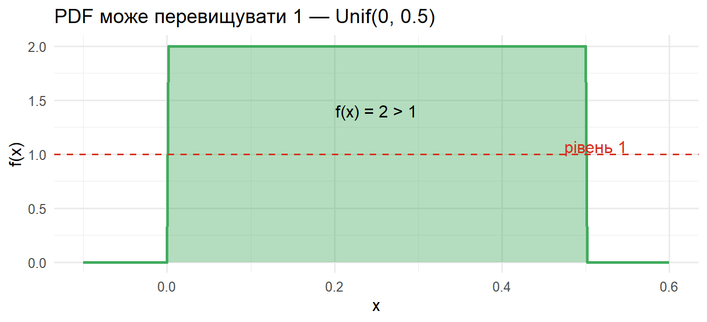
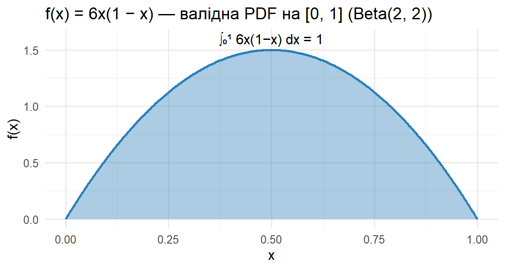
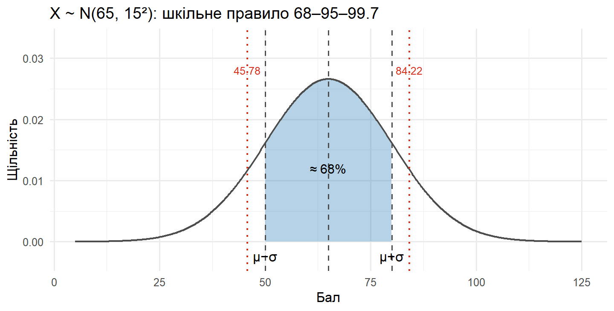
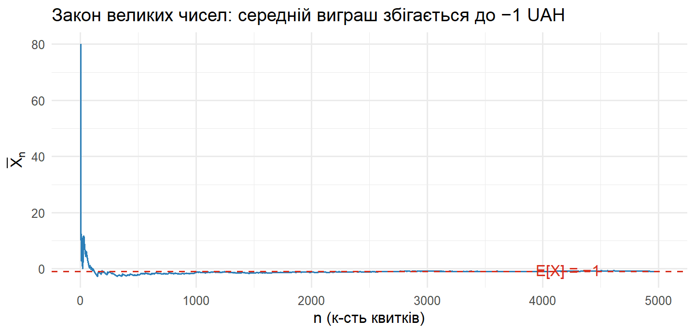
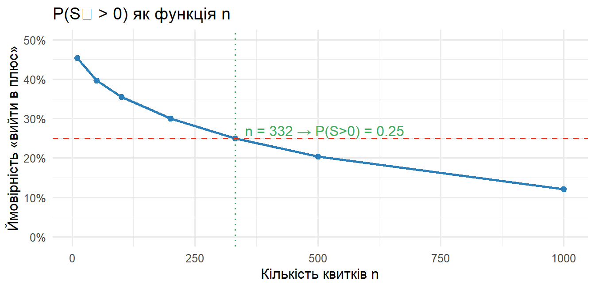

Документ містить повне розв’язання мідтерм-екзамену з курсу STAT250 — Теорія ймовірностей та статистика (літо 2026, інструктор: Розора І. В.). Для кожного завдання спочатку наведено математичне розв’язання, а потім, де це доречно, — перевірку та візуалізацію в R (tidyverse).
Частина I. Теорія
Section A. Multiple Choice
Q1. Означення умовної ймовірності
\(P(A \mid B) = ?\)
За означенням умовної ймовірності для \(P(B) > 0\):
\[
P(A \mid B) = \frac{P(A \cap B)}{P(B)}.
\]
Правильна відповідь: (B).
Інші варіанти:
\(P(A)\cdot P(B)\) — це \(P(A\cap B)\)лише за незалежності.
переплутані чисельник і знаменник (це формула Баєса для \(P(B \mid A)\)).
\(1 - P(A^c \mid B)\) дорівнює \(P(A \mid B)\), але не є означенням, а наслідком аксіом.
Q2. Дисперсія експоненційного розподілу
\(X \sim \mathrm{Exp}(\lambda = 0.5)\). Знайти \(\operatorname{Var}(X)\).
З довідника: \(\operatorname{Var}(X) = \dfrac{1}{\lambda^2}\). Отже,
Інші варіанти невірні: (A) і (B) загалом хибні; (D) описує взаємну несумісність, а не незалежність.
Q5. Коефіцієнт кореляції
\(\rho \in [-1, 1]\) і \(|\rho|\) вимірює силу лінійного зв’язку.
Правильна відповідь: (C).
— кореляція \(\neq\) причинність.
— \(\rho = 0\) означає відсутність лінійного зв’язку, але змінні можуть бути залежними (напр. \(Y = X^2\) із симетричним \(X\)).
— \(|\rho| \leq 1\) завжди, незалежно від розподілу.
Section B. True or False
#
Твердження
T/F
Коментар / правильне формулювання
1
Якщо \(A, B\) несумісні, \(P(A), P(B) > 0\), то \(A\) і \(B\)не можуть бути незалежними
T
\(P(A\cap B) = 0\), але \(P(A)P(B) > 0\) — рівність неможлива
2
\(E[X+Y] = E[X] + E[Y]\) для будь-яких \(X, Y\)
T
Лінійність сподівання працює без припущення про незалежність
3
Розподіл Пуассона моделює к-сть подій за фіксований час за умови сталої інтенсивності та незалежності
T
Класичні припущення процесу Пуассона
4
Якщо \(P(A\mid B) = P(A)\), то \(A\) і \(B\) — залежні
F
Правильно: незалежні (це і є означення незалежності)
5
Для неперервної \(X\) значення PDF \(f(x)\) може бути > 1
T
Напр. \(X \sim \mathrm{Unif}(0, 0.5)\): \(f(x) = 2\) на \([0, 0.5]\). Обмежений має бути інтеграл, а не висота
Демонструємо твердження №5 і №1 в R:
x <-seq(-0.1, 0.6, length.out =400)tibble(x = x, density =dunif(x, 0, 0.5)) |>ggplot(aes(x, density)) +geom_area(fill = green, alpha =0.4) +geom_line(color = green, linewidth =1) +geom_hline(yintercept =1, color = red, linetype ="dashed") +annotate("text", x =0.55, y =1.07, label ="рівень 1", color = red, hjust =1) +annotate("text", x =0.25, y =1.4, label ="f(x) = 2 > 1") +labs(title ="PDF може перевищувати 1 — Unif(0, 0.5)",x ="x", y ="f(x)")

# Перевірка №1: несумісні події не можуть бути незалежнимиP_A <-0.3; P_B <-0.4P_AB_disjoint <-0# бо несумісніP_AB_indep <- P_A * P_Btibble(`P(A∩B), якщо несумісні`= P_AB_disjoint,`P(A)·P(B), якщо незалежні`= P_AB_indep)
# A tibble: 1 × 2
`P(A∩B), якщо несумісні` `P(A)·P(B), якщо незалежні`
<dbl> <dbl>
1 0 0.12
Section C. Validity Check
C1. Чи є \(f(x) = 6x(1-x)\) валідною PDF на \([0,1]\)?
Умова 1 (невід’ємність). На \([0, 1]\): \(x \geq 0\) і \(1-x \geq 0\), тому \(f(x) \geq 0\). ✓
Висновок:\(f(x)\) — валідна PDF (це частковий випадок розподілу \(\mathrm{Beta}(2, 2)\)).
f <-function(x) 6* x * (1- x)# чисельний інтегралintegrate(f, 0, 1)
1 with absolute error < 1.1e-14
tibble(x =seq(0, 1, length.out =400), y =f(x)) |>ggplot(aes(x, y)) +geom_area(fill = blue, alpha =0.4) +geom_line(color = blue, linewidth =1) +annotate("text", x =0.5, y =1.6,label ="∫₀¹ 6x(1−x) dx = 1") +labs(title ="f(x) = 6x(1 − x) — валідна PDF на [0, 1] (Beta(2, 2))",x ="x", y ="f(x)")

C2. (Бонус) Знайти \(k\) для \(f(x) = k\,e^{-3x}\), \(x \geq 0\)
Шукаємо \(k > 0\):
\[
\int_0^{\infty} k\,e^{-3x}\,dx = k \cdot \left[-\tfrac{1}{3} e^{-3x}\right]_0^{\infty}
= k \cdot \tfrac{1}{3} \stackrel{!}{=} 1
\;\Longrightarrow\; \boxed{k = 3}.
\]
Перевірка:
невід’ємність: \(3 e^{-3x} > 0\) ✓
інтеграл: \(\int_0^\infty 3 e^{-3x}\,dx = 1\) ✓
Отже \(f(x) = 3 e^{-3x}\) — це PDF експоненційного розподілу з параметром \(\lambda = 3\): \(E[X] = 1/3\), \(\operatorname{Var}(X) = 1/9\).
integrate(function(x) 3*exp(-3* x), 0, Inf)
1 with absolute error < 5.5e-06
Section D. R Output Interpretation
Контекст: \(X \sim \mathcal{N}(\mu = 65,\ \sigma = 15)\) — розподіл балів за мідтерм.
mu <-65sigma <-15pnorm(80, mu, sigma) # 0.8413
[1] 0.8413447
pnorm(50, mu, sigma) # 0.1587
[1] 0.1586553
pnorm(95, mu, sigma, lower.tail =FALSE) # 0.0228
[1] 0.02275013
qnorm(0.90, mu, sigma) # 84.22
[1] 84.22327
qnorm(0.10, mu, sigma) # 45.78
[1] 45.77673
xs <-seq(mu -4*sigma, mu +4*sigma, length.out =600)band <-tibble(x = xs, y =dnorm(xs, mu, sigma)) |>mutate(region =if_else(x >= mu - sigma & x <= mu + sigma, "in", "out"))ggplot(band, aes(x, y)) +geom_area(data =filter(band, region =="in"), fill = blue, alpha =0.35) +geom_line(color = grey_d, linewidth =0.8) +geom_vline(xintercept =c(mu - sigma, mu, mu + sigma),linetype ="dashed", color = grey_d) +geom_vline(xintercept =c(45.78, 84.22),linetype ="dotted", color = red, linewidth =0.8) +annotate("text", x = mu, y =0.012, label ="≈ 68%", size =4) +annotate("text", x =c(50, 80), y =-0.0015, label =c("μ−σ", "μ+σ"), vjust =1) +annotate("text", x =c(45.78, 84.22), y =0.028,label =c("45.78", "84.22"), color = red, size =3.3) +labs(title ="X ~ N(65, 15²): шкільне правило 68–95–99.7",x ="Бал", y ="Щільність") +coord_cartesian(ylim =c(-0.003, 0.033))

(a) pnorm(80, ...) = 0.8413. Бал 80 — це 84-й перцентиль: 84.13% когорти набрали менше. На графіку 80 точно збігається з \(\mu + \sigma\), тож це високий, але не екстремальний результат — приблизно один з шести студентів набрав ще більше.
Це — правило 68–95–99.7 (empirical / 68–95–99.7 rule): у межах \(\pm 1\sigma\) нормальний розподіл містить \(\approx 68\%\) маси.
(d) qnorm(0.90, ...) = 84.22. Стипендію отримують ті, хто набрав не менше 84.22 бала. Оскільки 84.22 > 80 = \(\mu + \sigma\), поріг лежить правіше від \(\mu+\sigma\): 90-й перцентил — це більше, ніж 84.13%, що відповідає \(\mu+\sigma\).
(e) qnorm(0.10, ...) = 45.78. До тьюторінгу запрошують студентів із балом до 45.78. Поріг 45.78 < 50 = \(\mu - \sigma\): 10% припадає на ще лівіший «хвіст», ніж 15.87%, тому 10-й перцентил лежить нижче від \(\mu-\sigma\). Стандартизовано: \(z_{0.10} = -1.282 < -1\).
(f) (Бонус) \(P(45.78 < X < 84.22)\). 45.78 і 84.22 — це 10-й і 90-й перцентилі \(X\). Маса між ними дорівнює \(0.90 - 0.10 = 0.80\). Завдяки симетрії нормального розподілу інтервал симетричний навколо \(\mu = 65\) (відхилення \(\pm 19.22\)).
\[
P(45.78 < X < 84.22) = 0.90 - 0.10 = 0.80.
\]
Частина II. Прикладні задачі
Problem 1 — The Pugs Scandal
Дано:
Подія
Позначення
Значення
Частка справжніх мопсів серед заявок
\(P(\text{Pug})\)
0.20
Чутливість тесту (sensitivity)
\(P(+\mid\text{Pug})\)
0.85
Хибнопозитивний результат
\(P(+\mid\overline{\text{Pug}})\)
0.10
prior_pug <-0.20sens <-0.85# P(+ | Pug)fpr <-0.10# P(+ | not Pug)prior_npug <-1- prior_pugspec <-1- fpr # P(- | not Pug)
Це base-rate fallacy (помилка ігнорування базової частоти): висока чутливість тесту ще не означає високу post-test ймовірність, якщо апріорна частка\(\text{Pug}\) мала. Уявімо 100 заявок:
20 справжніх мопсів → з них \(0.85 \cdot 20 = 17\) дають «+»
80 не-мопсів → з них \(0.10 \cdot 80 = 8\) дають «+»
Усього «+»: 25, з яких 17 справжніх, тобто \(17/25 = 0.68\).
Хибнопозитивні (8) розбавляють пул позитивних, бо їх «постачає» велика популяція не-мопсів.
Порівняння:\(0.68 \rightarrow 0.95\). Другий незалежний тест істотно покращує діагностичну надійність, бо false-positive rate множиться: \(0.10 \times 0.10 = 0.01\), тоді як sensitivity падає лише до \(0.85^2 \approx 0.72\).
Теорема:Центральна гранична теорема (CLT) — для i.i.d. величин зі скінченними \(\mu\) і \(\sigma^2 > 0\) стандартизована сума прямує до \(\mathcal{N}(0,1)\).
Пояснення. Гравець плутає LLN з «правом на реванш». LLN гарантує, що середній чистий виграш на квиток стабілізується навколо \(-1\) UAH — а не навколо нуля чи додатного числа. Тобто чим більше квитків, тим впевненіший збиток, а не виграш: \(E[S_n] = -n\) — лінійно зростає вниз. Жодне «дострибатися до плюсу» математично не передбачено; залишається лише дисперсія \(\sigma\sqrt{n}\), яка росте повільніше, ніж \(|E[S_n]|\).
set.seed(7)draws <-sample(x, 5000, replace =TRUE, prob = p)df_lln <-tibble(n =seq_along(draws),cum_mean =cumsum(draws) /seq_along(draws))df_lln |>ggplot(aes(n, cum_mean)) +geom_line(color = blue) +geom_hline(yintercept = EX, color = red, linetype ="dashed") +annotate("text", x =4500, y = EX +0.5,label ="E[X] = −1", color = red, hjust =1) +labs(title ="Закон великих чисел: середній виграш збігається до −1 UAH",x ="n (к-сть квитків)", y =expression(bar(X)[n]))

(e) (Бонус) Мінімальне \(n\), при якому \(P(S_n > 0) \leq 0.25\)
Через CLT (для \(E[X_i] = -1\), \(\operatorname{Var}(X_i) = 729\), \(\sigma = 27\)):
tibble(n =c(10, 50, 100, 200, 332, 500, 1000)) |>mutate(p =prob_profit(n)) |>ggplot(aes(n, p)) +geom_line(color = blue, linewidth =1) +geom_point(color = blue, size =2) +geom_hline(yintercept =0.25, color = red, linetype ="dashed") +geom_vline(xintercept = n_min, color = green, linetype ="dotted") +annotate("text", x = n_min +20, y =0.27,label ="n = 332 → P(S>0) = 0.25", color = green, hjust =0) +scale_y_continuous(labels =percent_format(), limits =c(0, 0.5)) +labs(title ="P(Sₙ > 0) як функція n",x ="Кількість квитків n", y ="Ймовірність «вийти в плюс»")

Інтерпретація. Після ≈ 332 квитків шанси гравця опинитися «в плюсі» падають до 25%. З кожним наступним квитком ця ймовірність продовжує спадати, наближаючись до нуля при \(n \to \infty\) — пряме слідство LLN.